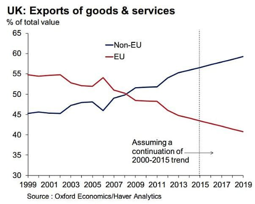
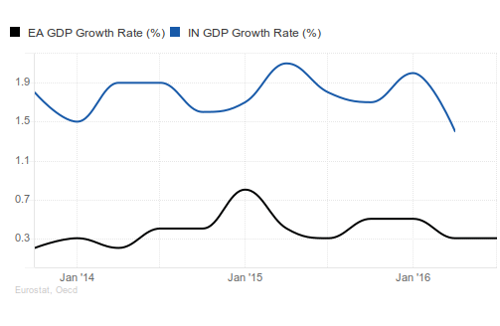
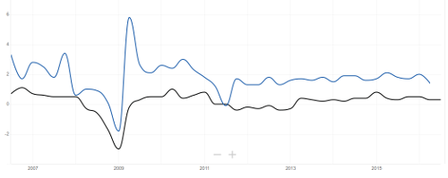
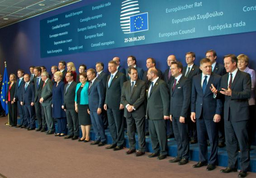

Occam’s racists
Follow the money
Those upset about Brexit like to see it as an isolated mistake that came from nowhere.
This is not a random event. Most events are never isolated, and Brexit is no different. It is a symptom of a wider trend.
Our exports to the EU have been falling since 2000 and especially since the financial crash of 2008.
Meanwhile our trade with the 84% of people that are not in the EU has been growing.
You don’t have to be an economic genius to work out why this has been happening, the developing world has been booming, while the EU keeps choosing job destroying policies and then when those jobs are gone, uses the decline as an excuse to double down on nonsense and kill some more jobs.
To pick a country almost at random, lets compare the Euro area to India. The quarterly GDP growth of India is five times higher than the Eurozone.
This is not a recent trend. Lets look at the ten year graph:
India’s growth is always higher than the Eurozone, look at 2011, India can have a battle with Pakistan, risking Nuclear annihilation, and still not go below the Euroarea’s growth.
This is not just a ten year trend, India has beaten European growth my whole lifetime. It is repeated across the developing world. The Eurozone has mostly flat or negative growth, while the developing world keeps doubling its GDP to very surely catches up to our level of wealth.
What these graphs show is that for the UK to maximise its wealth, we have to get out there and be a global trading nation once again.
The 2008 crash showed that the square mile of the city of London cannot pay for 65 million people. Since then we have just been running our country on fumes, currency manipulation and denial. We are going to have to use the whole of the UK and actually make and do things again that people want to pay for.
There is a lot of spare supply side capacity in the Midlands and North, and a lot of the human expertise is still there, grey and soon to leave the workforce but available right now. Luckily, we are waking up just in time.
The remoaners are going to moan for a generation
I ended my post The End of the World is Cancelled saying that Britain and Europe will get beyond Brexit and the relationship will be better than ever.
We won’t have such luck with our domestic malcontents however. The long-term inevitable and unavoidable trends above are totally ignored by Europhiles. It is a zero-sum game where the growing 84% of the world not in the EU don’t exist.
There are a lot of reasons for the professional remoaner class. Here are a few of the most obvious ones:
- People are used to patronage from the EU. However, this was always our money to start with, we can calm the nerves Universities and Museums etc by stuffing their mouths full of gold. There is so much waste and duplication in the EU that we can double the grants of everyone and still be in profit.
- EU salaries are often unbelievably good with endless handy perks. So Brexit has cut off the easy career path for a lot of the establishment who were expecting to upgrade to the European level: judges, politicians, civil servants, policy wonks, etc.
- EU elections happen between UK government elections, so for MPs, it is handy backup option to become an MEP if you are unexpectedly get kicked out by the voters. European elections are based on a list system so it doesn’t matter how personally unpopular you have become. Likewise minsters and high level civil servants can become commissioners and so on.
- Due to the above reduction in insider jobs, the private sector revolving door has never been more powerful. The finance industry has a lot of spare cash (time for more taxes?) and it hasn’t demobilised from the Referendum campaign. MPs like Nick Clegg who seem unlikely to keep their seat at the next election, are gearing up for the next job. Just look how much cash he is already taking from the banks.
I could go on and on, but if you have read my post The Treaty of Losers, you know I just cannot ignore the Occam’s Razor question that is bugging me. Maybe it is nothing to do with these reasons listed above, maybe it is much simpler and more obvious.
Occam’s racists
Until now, because the UK has been controlled by the EU, it could never agree to anything with its Commonwealth allies, the Commonwealth turned into a bit of a talking shop. However, it is turning back into an important body now.

As I talked about in previous posts, citizens of the Commonwealth countries volunteered in their millions to fight and die for us in World War II. Why wouldn’t everyone want to re-establish links with these great countries?
Looking back at the first part of this post, we have everything to gain. Who wouldn’t want to do trade deals with the massively growing commonwealth economies?
The answer is the remainer politicians and the establishment experts, who won’t even dare to discuss it. They bang on about having access to a (declining) market of “500 million people” (which includes UK so it is actually 435 million) but they never talk about the 2.3 billion people in Commonwealth or the 6.5 billion in the non-EU rest of the world.
Is this because it will just undermine their argument or is there something simpler going on?
Look back at the Commonwealth Heads of State, now look at the EU leaders:
Do you spot the difference?